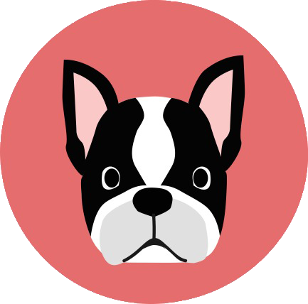

<!--
  Generated template for the MisMascotasPage page.

  See http://ionicframework.com/docs/components/#navigation for more info on
  Ionic pages and navigation.
-->

<ion-header>
    <ion-navbar color="barra">
      <button ion-button menuToggle>
        <ion-icon name="menu"></ion-icon>
      </button>
      <ion-title>Mis mascotas</ion-title>
      <ion-buttons end>
          
      </ion-buttons>
    </ion-navbar>
  </ion-header>


<ion-content padding class="backgroundGeneral">
  <ion-card *ngFor="let item of misMascotas">
      <ion-card-content (click)='irAPerfil(item.idMascota)'>
        <ion-card-title>
        <h1>{{ item.nombre }} - {{ item.descripcionRaza }}</h1> 
        </ion-card-title>
          <div class="imagenFondo">
            
            
          </div>
        </ion-card-content>
  </ion-card>

  <ion-grid>
    <ion-row>
      <ion-col col-12>
        <button round ion-button block color="secondary" (click)="agregarMascota();"> Agregar Mascota
        </button>
      </ion-col>
    </ion-row>
  </ion-grid>
</ion-content>
